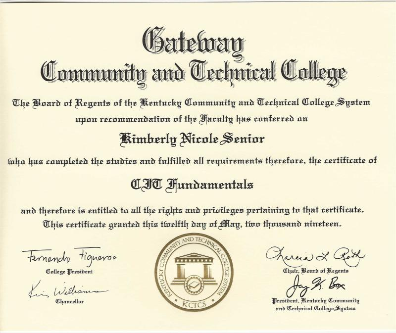
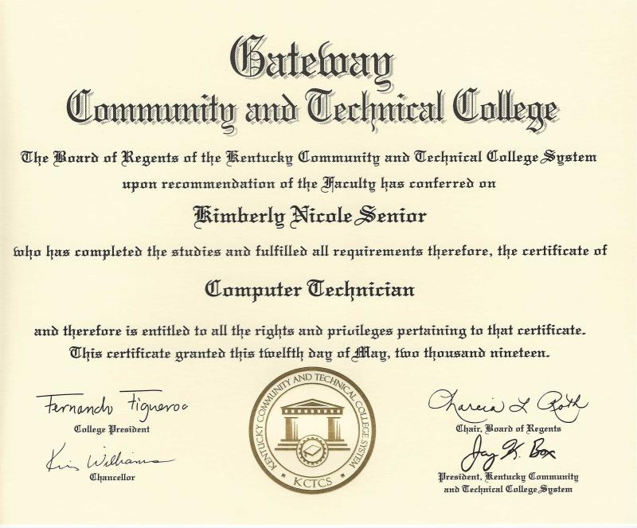

Kimberly Hogle
Full-Stack Developer
Skills
- Languages: JavaScript, C#, HTML/CSS, SQL
- Tools: Git, VSCode, Visual Studios
Work Experience
Kids Club Staff – YMCA of Greater Cincinnati (August 2024–Present)
- Ensuring the safety of all children visiting the Kids Club.
- Creating a fun and engaging environment for children.
- Keeping a clean and fun environment where kids love to visit.
- Assisting children with activities and games.
- Communicating with parents and guardians about their children's experiences.
- Handling any issues or conflicts that arise among children.
- Maintaining a positive attitude and professionalism while interacting with children and parents.
- Adhering to all safety protocols and guidelines.
Amazon Flex Delivery Driver – Amazon Flex (January 2024-Present)
- Picking up packages from Amazon delivery stations and delivering them to customers.
- Ensuring packages are delivered on time and in good condition.
- Providing excellent customer service during deliveries.
- Maintaining a clean and organized vehicle.
- Adhering to all traffic laws and safety regulations.
- Communicating with Amazon support for any issues during deliveries.
- Using the Amazon Flex app to manage deliveries and track performance.
- Managing time effectively to complete deliveries within the scheduled time frame.
- Following all safety protocols to ensure the safety of packages and customers.
- Maintaining a positive attitude and professionalism while interacting with customers.
Education
Certificate in Software Development with C# – Code:YOU (2025)
Certificate in CIT Fundamentals - Gateway CTC (2019)

Certificate in Computer Technician - Gateway CTC (2019)
